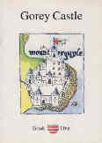
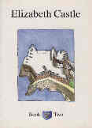
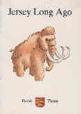
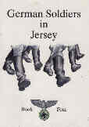
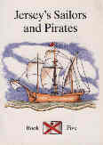
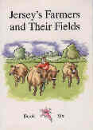
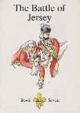
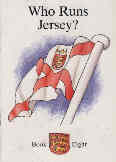
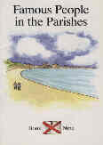
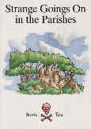

Outlining major topics and events in Jersey history, they are a useful addition to a family bookshelf, a welcome present, and are also useful for a family outing. They are used in schools and are primarily aimed at the 7-11 age group, but can be enjoyed by the whole family.
Each book retails at only £3.50 and can be ordered from the Société Jersiaise.
|
 |
 |
|
Gorey Castle The story of Mont Orgueil |
Elizabeth Castle The story of Elizabeth Castle |
|
 |
 |
|
Jersey Long Ago Prehistoric Jersey and its archaeology |
German Soldiers in Jersey The story of the Occupation of Jersey 1940-45 |
|
 |
 |
|
Jersey's Sailors and Pirates The story of fishermen, trade, shipbuilding, privateering and the sea |
Jersey's Farmers and Their Fields The story of agriculture in Jersey |
|
 |
 |
|
The Battle of Jersey The story of what happened when the French invaded Jersey in 1781 |
Who Runs Jersey? An introduction to the Constitution: Parishes, States, Bailiff, Lieutenant Governor |
|
 |
 |
|
Famous People in the Parishes Notable historical figures and the stories of what they did |
Strange Goings On in the Parishes Legends and stories from each of the Parishes |
Now What?
A larky look at Jersey's ascent to affluence - thanks to the hard graft and commercial know-how of the Island's workforce through the centuries
written by Sonia Hillsdon The book treats the development of different industries in Jersey in a light-hearted and readable way - not a dry academic history book, but a rollicking look back from our modern viewpoint at the turn of the millennium at how Jersey families - temps passé - have made a living. "Now What?" retails at £3.95 |
The Mystery of the Cave
An illustrated introduction to La Cotte de Saint Brelade, its importance in Jersey history, and the work of archaeologists
written by Sonia Hillsdon The book is aimed at the 7-11 age group and comes from the same team of writer and illustrator responsible for the popular series of local history books for children. "The Mystery of the Cave" was published in October 1999 and can be ordered at £4.25 |
Some reviews of the books
The latest short history written by Sonia Hillsdon and illustrated by Geraint Jennings deals with La Cotte de St Brelade, the cave which was inhabited by man an incredible 250,000 years ago.
In a simple style which will be easily understood by young children, the book explains how Old Stone Age man hunted mammoth and woolly rhinoceros in conditions which were very different from those of today.
The book also explains how excavations at La Cotte have given us an insight into Jersey's distant past.
JEP 30/12/1999
THE indefatigable Sonia Hillsdon has produced another of her small books, this one apparently aimed at adults with a sense of humour.
The distinction has to be made because she and Geraint Jennings have between them produced a series of ten local history books for children.
In essence it is a speedy trip through Jersey history, looking at how the Islanders have earned their crusts over the centuries - a timely look if you believe that the finance industry is about to go pear-shaped.
The best thing about the book are the illustrations by Geraint Jennings, whose light-hearted touch is bright and lively and features several versions of Hascouf and Piton, the two characters who take the reader through the ages, as the generations do everything from cider-making to cod fishing.
For anyone who wants a quick zip through Jersey's history from an economic angle, this is a fun read. But the style and presentation still seems far more suited to younger readers.
Jersey Evening Post 6/8/99
The last two children's books in the excellent series about Jersey by Sonia Hillsdon and Geraint Jennings have recently been published.......
The last two books are superbly illustrated, as were the previous books, with the drawings of Geraint Jennings.
These simple yet very descriptive illustrations are perfect for the books, being fully explanatory yet devoid of fussy detail and thus ideal for young children to enjoy. Sonia Hillsdon's words match the pictures because they don't just inform, they also question and invite children to find out more for themselves.
The books will be on sale at £3.50 each and I would recommend anyone with children between seven and ten to buy them and, if possible, complete the series.
JEP 25/5/96
'The Battle of Jersey' and 'Who Runs Jersey?', written by Sonia Hillsdon and illustrated by Geraint Jennings, are the latest books for children in an excellent series which explains many aspects of Island life to primary schoolchildren.........
Geraint Jennings's illustrations are excellent. The drawing is simple without unnecessary fussiness but accurate in detail and there are delightful little touches of humour to be found.....
These books will be excellent for use in both home and school, and the whole collection is a worthwhile one to build up a child's library.
JEP 9/10/95
These neat little books are the right size for small children's hands and while the information inside is succinct it is also very comprehensive.
The illustrations, as in the previous books, are simple but instructive and perfectly suited to the educational style of the books.
However, that is not to say that these are just school books. For while they are ideal for teaching Jersey history, they are also fun for children to read or have read to them.
Volume five deals with 'Jersey's Sailors and Pirates' and will be a delight to any red-blooded Jersey lad with the sea in his veins.
In the book we find out about the trade in and out of Jersey; why Islanders, men women and children, started knitting 6,000 pairs of stockings every week; what various knots are called; what the difference is between a pirate and a privateer; and why Rope Walk in St Helier has that name.
JEP
The first two books in the series, which like the latest pair were written by Sonia Hillsdon and illustrated - by Geraint Jennings, dealt with Gorey and Elizabeth Castles....
'German Soldiers in Jersey' is the fourth book in the series and in it the history of the Occupation is simply, but fully set out, from the air raids in June 1940 to the great day of Liberation on 9 May 1945.
These two books are quite delightful and written in such a way as to be interesting and easy to read for children. Particularly appealing is the way in which the reader is urged to find out more for himself. Geraint Jennings' illustrations, meanwhile, are excellent and strike just the right balance between adult and children's tastes.
JEP 14/9/1994